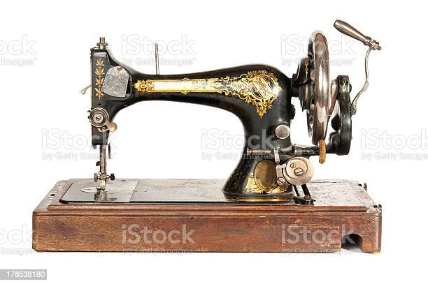

Este negocio empezo con doña carmenza que le encataba coser desde pequeña confeccionando ropa para muñecas, con su maquina vieja empezo fabricando el primer uniforme colegial para su sobrina, en la proxima temporada escolar los vecinos de su casa le encargaron los uniformes para sus hijos hasta la fecha de hoy las ventas aumentaron en todo el municipio.
